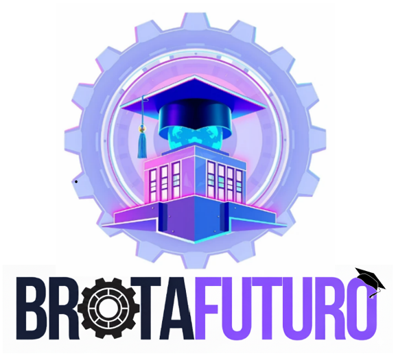

BrotaFuturo
🌱 Visión
Brindar a los estudiantes de la ESCOM una plataforma centralizada, confiable y accesible que facilite la búsqueda, postulación y gestión de vacantes de servicio social y estancias profesionales, fortaleciendo la vinculación entre alumnos, profesores y empresas mediante herramientas tecnológicas seguras, intuitivas y orientadas al desarrollo académico y profesional.
🚀 Misión
Convertirse en la plataforma líder de vinculación académica y profesional del IPN, expandiéndose posteriormente a otras instituciones educativas del país. BrotaFuturo aspira a ser un referente nacional en la gestión de oportunidades formativas, impulsando el crecimiento profesional de los estudiantes y promoviendo relaciones sólidas entre la academia y el sector productivo mediante soluciones tecnológicas innovadoras y socialmente responsables.
🎓 Nuestro Logo
El logo de BrotaFuturo fue elegido porque representa de forma clara la esencia del proyecto: la unión entre educación, tecnología y crecimiento profesional. El edificio central simboliza a la ESCOM como origen académico; el birrete y el globo reflejan la formación universitaria con visión global; y el engrane que rodea la imagen destaca el enfoque tecnológico y la innovación. La tipografía combina profesionalismo y modernidad: “BROTA” en negro transmite solidez, mientras “FUTURO” en púrpura expresa creatividad y proyección.
🌟 Estadísticas Rápidas
120+
Vacantes activas
45+
Profesores registrados
30+
Empresas verificadas
500+
Estudiantes beneficiados
🏢 BrotaFuturo V.S. Others
| Nombre | Ventajas competitivas | Desventajas |
|---|---|---|
| BrotaFuturo | Plataforma enfocada específicamente en estudiantes del IPN/ESCOM para servicio social y estancias profesionales, integrando vacantes de profesores y empresas en un solo lugar. Centraliza información dispersa, incorpora filtros por perfil académico y necesidades del estudiante, y al estar diseñada desde la perspectiva estudiantil, prioriza la usabilidad, claridad del proceso y alineación con la normativa del IPN. | En etapa inicial, con menor reconocimiento de marca que plataformas consolidadas. Su alcance comienza limitado a una comunidad específica (ESCOM/IPN) y requiere esfuerzos de vinculación con empresas y adopción institucional para consolidar su base de vacantes y usuarios activos. |
| Computrabajo | Destaca por su gran cantidad de vacantes, su amplia base de empresas y su fuerte reconocimiento de marca, siendo atractiva para universitarios necesitados de vacantes para realizar su servicio social o estancia profesional. | Esta página no está hecha para estudiantes. Hay pocas ofertas útiles, muchas no son de fiar o están mal explicadas, y está tan llena de cosas que no son relevantes, dificultando encontrar una oferta adecuada. |
| Sistema Institucional de Servicio Social (SISS) - IPN | Es la plataforma oficial del IPN para gestionar el servicio social, lo que garantiza validez en los trámites y centraliza programas de todas las escuelas, permitiendo registrar vacantes y darles seguimiento bajo un marco normativo. | La plataforma tiene una interfaz poco clara, vacantes con información incompleta y sin filtros ni apoyo, lo que obliga a los estudiantes a buscar en redes sociales y la hace ver más burocrática que práctica. |
| Es el estándar global para conexiones profesionales. Permite validar la reputación de la empresa, contactar directamente a reclutadores y acceder a estancias en empresas tecnológicas de alto nivel que no usan bolsas de trabajo comunes. | No está diseñada para la normativa del servicio social del IPN. Puede resultar intimidante para estudiantes sin experiencia previa, y la alta competencia con profesionales experimentados dificulta que sus perfiles destaquen. | |
| OCC | La publicación y búsqueda de vacantes de servicio social y prácticas profesionales tienen una amplia visibilidad y tiene herramientas tecnológicas como IA para la descripción de vacantes. | No muestra vacantes para hacer servicio social con profesores. Hay vacantes engañosas o prácticas fraudulentas por parte de algunas empresas que utilizan la plataforma. No todas las empresas cumplen la normativa de servicio social del IPN. |